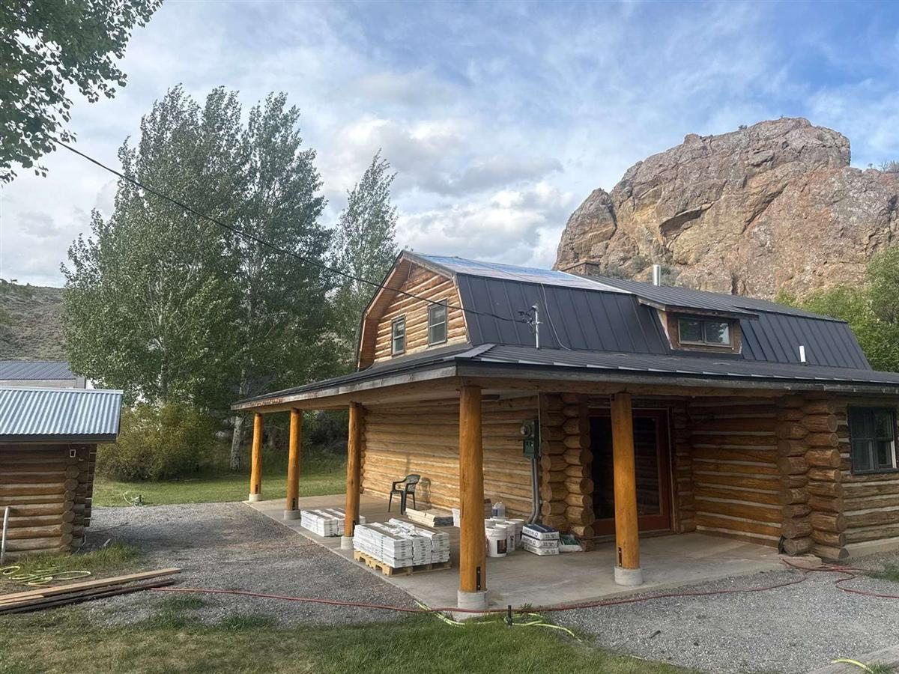

Log homes were made for this landscape — but this landscape works on them harder than almost anywhere else in the country. After decades of building and restoring log homes in the Wood River Valley, we can usually tell what a home has been through before we're out of the truck. Here are the four forces at work on your logs, and what actually protects against them.

The four forces
High-altitude UV
At 5,000–6,000 feet, there's simply less atmosphere between the sun and your logs, so UV hits harder than the same hours of sun at sea level. UV is what breaks down stain and then the wood surface itself — it's why south- and west-facing walls gray out years before the rest of the home, and why stain up here needs re-treatment on a 5–8 year cycle rather than the longer intervals you'd get away with elsewhere.
Freeze-thaw cycling
Valley winters swing across the freezing line over and over. Every crack, check, and chinking gap that holds moisture becomes a small hydraulic jack: water in, freeze, expand, widen, repeat. This is what kills failed chinking fast, and it's why we tell owners a chinking gap found in fall is urgent — winter won't leave it the size it is now.
Bone-dry summers
Single-digit humidity through late summer pulls moisture out of logs, opening surface checks. The checking itself is normal wood behavior — but every check that opens on a top-facing surface is a future water catch if the finish isn't maintained.
Snow against the wood
Months of snow piled against bottom courses, plus roof-drip splashback, keep the lowest logs wetter than everything above. That's why nearly every restoration we do involves the bottom two or three courses — the splashback zone is where log homes rot first.
The protection system
None of these forces is a problem for a log home that's maintained as a system:
- Stain handles UV and sheds water — inspected every 3–5 years, renewed at 5–8. See the signs it's failing in our re-staining guide.
- Chinking keeps the joints sealed through log movement — checked every fall, repaired before winter, not after.
- Drainage and clearance keep the splashback zone survivable — gutters that work, grade that sheds, snow managed away from the walls.
- A fall inspection ties it together — every year, before the freeze, by someone who knows what failing looks like.
Do those four things and a log home in this valley lasts generations — we restore 40- and 50-year-old homes that prove it. Skip them for a decade and the climate collects.
Get ahead of it
If you don't know where your home stands, that's what an assessment is for. We walk the whole structure — chinking, stain, splashback zone, roofline — and tell you what needs attention now, what can wait, and what's fine. Call 208-897-8100 before the snow settles in.